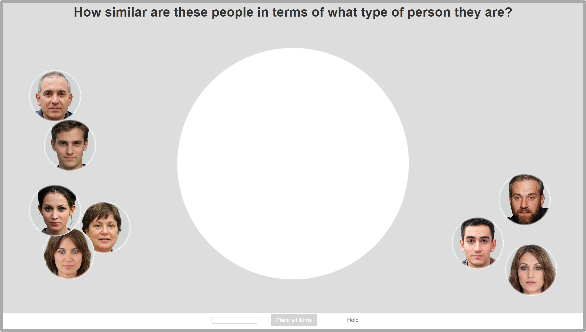
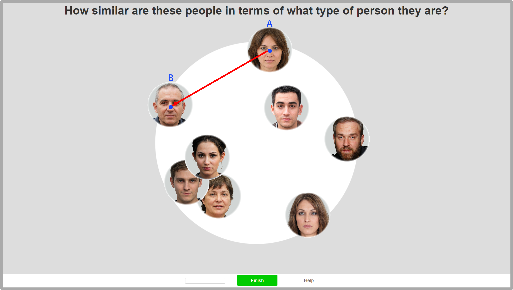
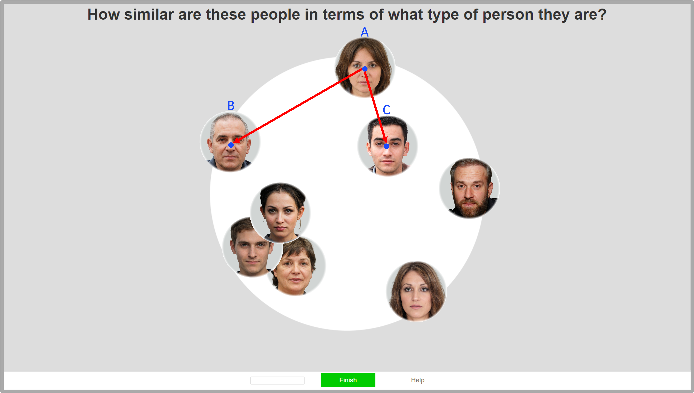
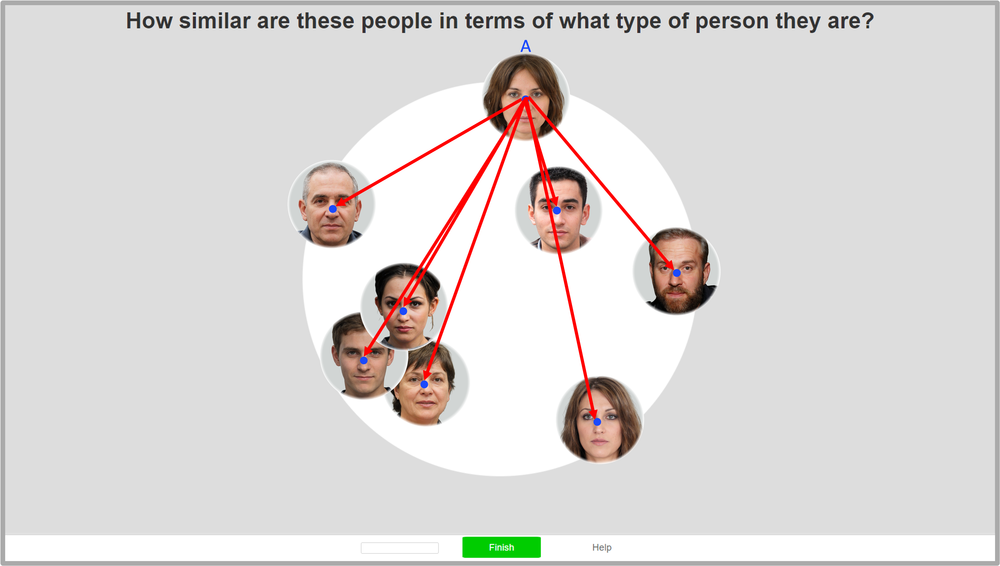
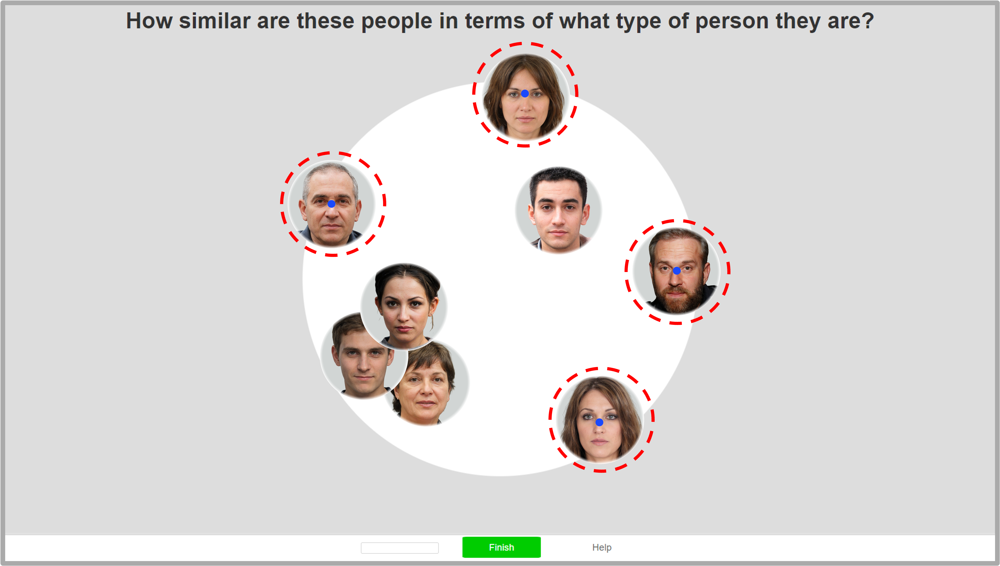
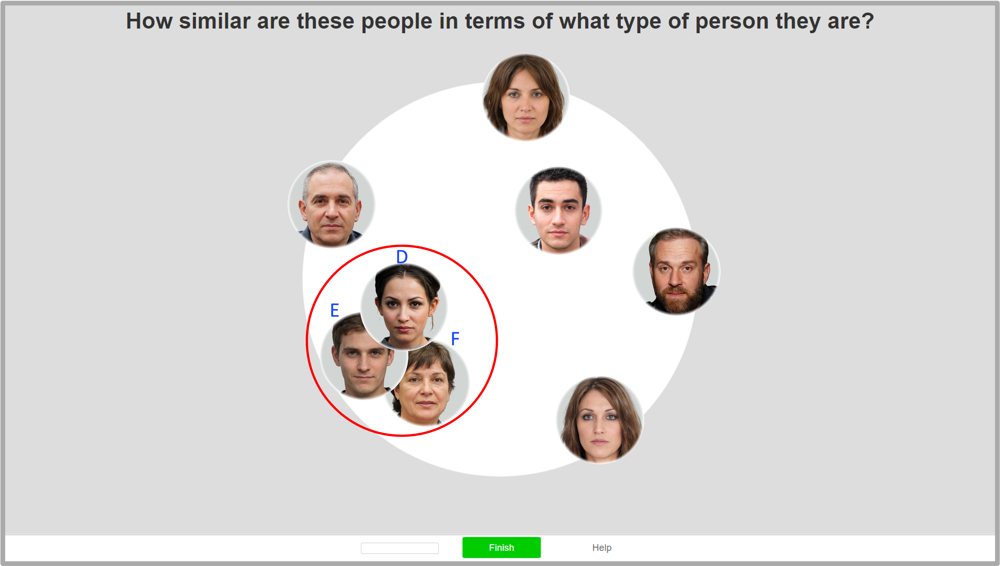
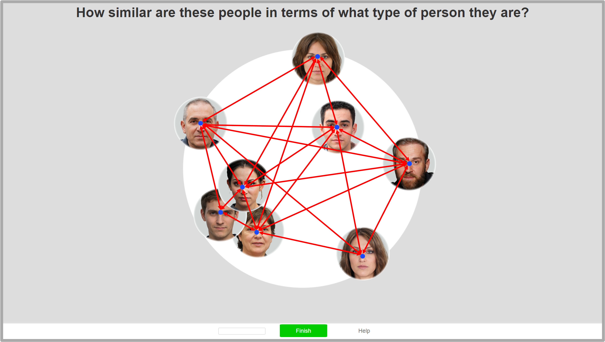
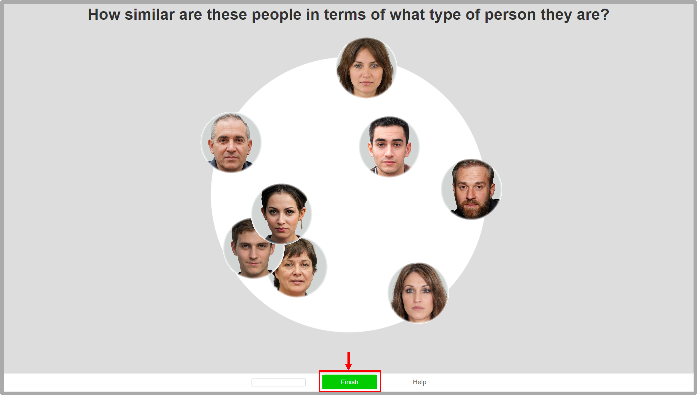

<!--
  File: Stage1_Part3_instruction-and-quiz.html
  Purpose: Participants will read the detailed instructions for the main task and complete a quiz to assess their understanding of the instructions. This webpage is the last part of Stage 1 prescreening, and the end of this webpage will direct participants to Stage 2 main task if they pass all prescreening requirements.
  Author: Yue Xu, yxu7@caltech.edu
  Last Updated: November 5, 2025
  Notes:
    - The project IDs, completion codes, and URLs are all placeholders and should be replaced with actual values before deployment.
    - The functions (each often defines a webpage) are organized in timeline order of the experiment. 
    - This file saves a data file as csv and an event data file that saves participants' actions to focus on the current webppage or move to other webpages. The event data file will be empty if the participant did not move away from the experiment webpage.
-->

<!DOCTYPE html>
<html>
    <head>
        <title>MA_qualification_task</title>
        <script src="jspsych-7.2.3/jspsych.js"></script>
        <script src="jspsych-7.2.3/plugin-html-keyboard-response.js"></script>
        <script src="jspsych-7.2.3/plugin-html-button-response.js"></script>
        <script src="jspsych-7.2.3/plugin-survey-multi-choice.js"></script>
        <script src="jspsych-7.2.3/plugin-fullscreen.js"></script>
        <script src="jspsych-7.2.3/plugin-preload.js"></script>
        <script src="jspsych-7.2.3/plugin-instructions.js"></script>
        <script src="jspsych-7.2.3/plugin-browser-check.js"></script>
        <link href="jspsych-7.2.3/jspsych.css" rel="stylesheet" type="text/css">
        <style type="text/css">
        .jspsych-display-element {
            color: black;
            background-color: rgb(221,221,221);
        }

        /* center the content */
        .jspsych-content {
            width: 900px;
            margin-left: auto; 
            margin-right: auto;
        }
        </style>
    </head>
    <body>
    </body>
    <script type="text/javascript">
        const minimum_correct = 6; // the minimum number of correct answers to pass the quiz, out of 7 questions
        var num_questions = 7;
        var correct_answers = 0; // counter for number of correct answers
        var CFMT_minimum_correct = 33; // minimum correct number of CFMT questions to pass

        /* project IDs and URLs, if multiple projects are used for different participant races */
        var projectID_white = "XXXXXXXXTBD"; // replace with actual project ID
        var projectID_asian = "XXXXXXXXTBD"; // replace with actual project ID
        var projectID_black = "XXXXXXXXTBD"; // replace with actual project ID

        /* completion codes and URLs if failed the prescreening, for different projects, for example for different participant races */
        var stage1_code_white = "XXXXXXXXXTBD"; // replace with actual completion code
        var stage1_fail_end_url_white = "https://connect.cloudresearch.com/participant/project/XXXXXX/complete"; // replace with actual fail URL
        var stage1_code_asian = "XXXXXXXXXTBD"; // replace with actual completion code
        var stage1_fail_end_url_asian = "https://app.prolific.com/submissions/complete?cc=XXXXXX"; // replace with actual fail URL
        var stage1_code_black = "XXXXXXXXXTBD"; // replace with actual completion code
        var stage1_fail_end_url_black = "https://app.prolific.com/submissions/complete?cc=XXXXXX"; // replace with actual fail URL

        /* if passed prescreening, URLs for Stage 2 main task, for different projects, for example for different participant races */
        var MA_task_url_asian = "https://meadows-research.com/experiments/XXXXXXXX/v/XX/take-part/"; // replace with actual URL
        var MA_task_url_black = "https://meadows-research.com/experiments/XXXXXXXX/v/XX/take-part/"; // replace with actual URL
        var MA_task_url_white = "https://meadows-research.com/experiments/XXXXXXXX/v/XX/take-part/"; // replace with actual URL

        /* variables to store URL parameters and other info */
        var pass_end_url;
        var participant_race;
        var stage1_code;
        var stage1_fail_end_url;

        /* create timeline */
        var timeline = [];

        /* get list of stimuli */
        var i;
        var preload_stimuli = [];
        for (i=1; i<11; i++) {
            preload_stimuli.push('imgMA/Screen' + i + '.png')
        }

        var if_fullscreen = true;

        /* progress bar settings */
        var want_progress_bar = true;
        var progress_bar_instruction_end = 0.4;
        var progress_bar_quiz_end = 0.9;
        var progress_bar_quiz_step = (progress_bar_quiz_end - progress_bar_instruction_end)/num_questions;

        /* start the experiment */
        if (want_progress_bar) {
            var jsPsych = initJsPsych({
                show_progress_bar: true, 
                auto_update_progress_bar: false,
                message_progress_bar: 'Stage 1 Progress Remaining',
            });
        } else {
            var jsPsych = initJsPsych({
            });
        }

        /* get URL parameters */
        var CFMT_total_correct = jsPsych.data.getURLVariable('CFMT')
        if (typeof CFMT_total_correct === "undefined") {
            CFMT_total_correct = -1;
        }

        var Participant_id = jsPsych.data.getURLVariable('participantId');
        if (typeof Participant_id === "undefined") {
            Participant_id = "ParticipantIDnotValid";
        }

        var Assignment_id_from_URL = jsPsych.data.getURLVariable('assignmentId');
        if (typeof Assignment_id_from_URL === "undefined") {
            Assignment_id_from_URL = "AssignmentIDnotValid";
        }

        var Project_id_from_URL = jsPsych.data.getURLVariable('projectId');
        if (typeof Project_id_from_URL === "undefined") {
            Project_id_from_URL = "ProjectIDnotValid";
        }

        var url = window.location.href;

        /* preload images */
        var preload = {
            type: jsPsychPreload,
            images: preload_stimuli
        };
        timeline.push(preload);

        var start_time = new Date();

        /* do browser check before entering fullscreen, save the URL parameters */
        var BC_before_fullscreen = {
            type: jsPsychBrowserCheck,
            data: {
                task: 'BC_before_fullscreen',
                url: url,
                Participant_id: Participant_id,
                Assignment_id_from_URL: Assignment_id_from_URL,
                Project_id_from_URL: Project_id_from_URL,
                start_time: start_time.toUTCString(),
                devicePixelRatio: function() {
                    return window.devicePixelRatio;
                },
            }
        };
        timeline.push(BC_before_fullscreen);

        /* This fullscreen doesn't work on safari, and may close all tabs on some browser*/
        var full_screen = {
            type: jsPsychFullscreen,
            fullscreen_mode: true,
            message: `<p align='left' style='font-size: 130%;'>The experiment will switch to full screen mode when you press the button below.</p>
            `,
        };
        timeline.push(full_screen);

        /* if not in fullscreen, show instruction to switch to fullscreen manually */
        var instruction_to_fullscreen = {
            type: jsPsychHtmlButtonResponse,
            stimulus:`<p align="center" style="font-size: 130%;"><b>Full Screen Setting</b></p>
                <p align="center">The experiment failed to automatically switch to full screen. Please manually switch to full-screen mode.</p>
                <p align="center">Full-screen keyboard shortcuts:
                <p align="center">for Windows/Linux, press "F11" or press "Fn" + "F11" simultaneously;</p>
                <p align="center">for Mac, press "Ctrl" + "Command" + "F" simultaneously.</p> 
                `,
            choices: ['Continue'],
            data: {
                task: "instruction_to_fullscreen",
            }
        };

        /* check if fullscreen is enabled */
        var if_not_fullscreen = {
            timeline: [instruction_to_fullscreen],
            conditional_function: function(){
                if_fullscreen = jsPsych.data.get().last(2).values()[0].fullscreen;
                return !if_fullscreen;
            }
        };
        timeline.push(if_not_fullscreen);

        /* do browser check after entering fullscreen, get the fullscreen screen size */
        var BC_after_fullscreen = {
            type: jsPsychBrowserCheck,
            data: {
                task: 'BC_after_fullscreen',
                devicePixelRatio: function() {
                    return window.devicePixelRatio;
                },
            },
        };
        timeline.push(BC_after_fullscreen);

        var instructions = {
            type: jsPsychInstructions,
            pages: [
                // P1 - Instruction1
                `<p align="center" style="font-size: 130%;"><b>Experiment Instructions</b></p>
                <p align="left">You will read through the instructions for the main task of Stage 2 and complete a quiz of multiple-choice questions to assess your understanding of the instructions.
                `,

                // P2 - Instruction2
                `<p align="center" style="font-size: 130%;"><b>Experiment Instructions</b></p>
                <p align="left">In each trial, you will see a <u>circular arena</u> in the middle, and faces on the side. Your task is to <u>drag and drop</u> the faces into the arena according to how similar you think these people are, <u>in terms of their personality and characteristics that YOU infer.</u></p>
                <div style="display: inline-block; max-width: 800px;"></div> 
                `,

                // P3 - Instruction3
                 `<p align="center" style="font-size: 130%;"><b>Experiment Instructions</b></p>
                <p align="left">How you place these faces should be based on <u>how similar or different</u> you think these people are, <u>in terms of what types of person they are</u>. </p>
                <p align="left">For instance, different people treat others in different ways, do things in different ways, prefer or believe in different things, etc.</p>
                <div style="display: inline-block; max-width: 800px;"></div> 
                `,

                // P4 - Instruction4
                `<p align="center" style="font-size: 130%;"><b>Experiment Instructions</b></p>
                <p align="left">The distance between the centers (blue dots) of two faces indicates how similar you think they are in <u>personality and characteristics that you infer.</u> </p>
                <div style="display: inline-block; max-width: 800px;"></div> 
                `,

                // P5 - Instruction5
                `<p align="center" style="font-size: 130%;"><b>Experiment Instructions</b></p>
                <p align="left">By placing face A closer to face C than face B, you indicate that you think person A has more similar personality and characteristics to person C, than A to person B (lengths of red arrows indicate distance). </p>
                <div style="display: inline-block; max-width: 800px;"></div> 
                `,

                // P6 - Instruction5.5
                `<p align="center" style="font-size: 130%;"><b>Experiment Instructions</b></p>
                <p align="left">When placing any face (e.g., face A), consider how <u>this face is related to ALL other faces</u>. Remember that the distance between faces is measured based on the centers of the faces.</p>
                <div style="display: inline-block; max-width: 800px;"></div> 
                `,

                // P7
                `<p align="center" style="font-size: 130%;"><b>Experiment Instructions</b></p>
                <p align="left">Please <u>use the entire space of the arena</u> when you arrange the faces. Faces can be placed to the outside of the arena as long as the centers of the faces stay inside.</p>
                <div style="display: inline-block; max-width: 800px;"></div> 
                `,

                // P8
                `<p align="center" style="font-size: 130%;"><b>Experiment Instructions</b></p>
                <p align="left">You may place some faces very close to each other and even overlapping, if you think they share very similar types of personality and characteristics (for example, faces D, E, and F highlighted in the red circle).</p>
                <p align="left">To view an overlapped face, simply click on the face and it will rise to the top.</p>
                <div style="display: inline-block; max-width: 800px;"></div> 
                `,

                // P9
                `<p align="center" style="font-size: 130%;"><b>Experiment Instructions</b></p>
                <p align="left">However, this task is <u>NOT</u> about placing similar faces into multipe piles. <u>The distance between faces</u> that are close to each other <u>is informative</u>.</p>
                <p align="left">For example, D, E, F are indicated as sharing highly similar personality here. However, person D is indicated as more similar to person E than person F; and person F is indicated as equally similar to both person D and person E.</p>
                <div style="display: inline-block; max-width: 800px;"></div> 
                `,

                // P10
                `<p align="center" style="font-size: 130%;"><b>Experiment Instructions</b></p>
                <p align="left">After placing all faces into the arena, please <u>adjust ALL faces</u> to make sure <u>the distance between EVERY pair of faces</u> accurately indicates <u>how similar you think they are in their personality and characteristics that you infer.</u></p>
                <div style="display: inline-block; max-width: 800px;"></div> 
                `,

                // P11
                `<p align="center" style="font-size: 130%;"><b>Experiment Instructions</b></p>
                <p align="left">When you are satisfied with the arrangement, click the "Finish" button at the bottom bar to advance to the next trial. Please note that you will be asked to stay in full-screen mode for the entirety of the task.</p>
                <div style="display: inline-block; max-width: 800px;"></div> 
                `,

                // P12
                `<p align="center" style="font-size: 130%;"><b>Experiment Instructions</b></p>
                <p align="left">You have finished reading the instructions. You will next answer 7 quiz questions to test your understanding of the instructions.</p>
                <p align="left">If you are not sure whether you are ready for the quiz yet, please go back to check you've read and understood every page of the instructions. Some quiz questions may be hard and may focus on the details. <b>Your performance on the quiz will affect your qualifcation for Stage 2 of the study.</b></p>
                <p align="left"> The quiz will <b style="color:red">start</b> on the next screen. </p>
                `,
            ],
            show_clickable_nav: true,
            allow_backward: true,
            show_page_number: true,
            allow_keys: true,
            page_label: "Instruction Page",
            on_finish: function(){
                if (want_progress_bar) {
                    jsPsych.setProgressBar(progress_bar_instruction_end);
                }
            }

        };
        timeline.push(instructions);

        /* do browser check after reading instructions */
        var BC_after_instruction = {
            type: jsPsychBrowserCheck,
            data: {
                task: 'BC_after_instruction',
                devicePixelRatio: function() {
                    return window.devicePixelRatio;
                },
            }
        };
        timeline.push(BC_after_instruction);


        var quiz_stimuli = [];

        // Q1
        quiz_stimuli.push({
            quiz_prompt: `<b>It is okay that I do not use full screen mode. <span style='color:gray'>(True or False?)</span></b>`,
            quiz_options: ['True', 'False'],
            quiz_options_correct: ["True", "<mark style='background-color:#7B955B; color:white'>&#10004; False</mark>"],
            quiz_options_wrong: ["<mark style='background-color:#DC4B48; color:white'>&#10006; True</mark>", "<mark style='background-color:#7B955B; color:white'>&#10004; False</mark> <b style='color:gray'>You should stay in the full screen mode all the time.</b>"],
            answer_option: 'False',
            quiz_number: '<b>Q1</b>',
        });

        // Q2
        quiz_stimuli.push({
            quiz_prompt: `<b>What properties do you use to arrange the faces?<span style='color:gray'> (That is, how should you decide to place two faces closer or further apart?)</span></b>`,
            quiz_options: ['How similar they are in terms of <u>personality and characteristics</u>', 'How similar they are in terms of <u>the shape and brightness of the face</u>'],
            quiz_options_correct: ["<mark style='background-color:#7B955B; color:white'>&#10004; How similar they are in terms of <u>personality and characteristics</u></mark>", "How similar they are in terms of <u>the shape and brightness of the face</u>"],
            quiz_options_wrong: ["<mark style='background-color:#7B955B; color:white'>&#10004; How similar they are in terms of <u>personality and characteristics</u></mark>", "<mark style='background-color:#DC4B48; color:white'>&#10006; How similar they are in terms of <u>the shape and brightness of the face</u></mark>"],
            answer_option: 'How similar they are in terms of <u>personality and characteristics</u>',
            quiz_number: '<b>Q2</b>',
        });

        // Q3
        quiz_stimuli.push({
            quiz_prompt: `<p><b>If you place face A closer to face C than to face B, then</b></p> <b><span style='color:gray'>(That is, what does this arrangement indicate?)</span></b>`,
            quiz_options: ["I indicate that person A has <u>more different</u> personality and characteristics to person C", "I indicate that person A has <u>more similar</u> personality and characteristics to person C"],
            quiz_options_correct: ["I indicate that person A has <u>more different</u> personality and characteristics to person C", "<mark style='background-color:#7B955B; color:white'>&#10004; I indicate that person A has <u>more similar</u> personality and characteristics to person C</mark>"],
            quiz_options_wrong: ["<mark style='background-color:#DC4B48; color:white'>&#10006; I indicate that person A has <u>more different</u> personality and characteristics to person C</mark>", "<mark style='background-color:#7B955B; color:white'>&#10004; I indicate that person A has <u>more similar</u> personality and characteristics to person C</mark>"],
            answer_option: "I indicate that person A has <u>more similar</u> personality and characteristics to person C",
            quiz_number: '<b>Q3</b>',
        });

        // Q4
        quiz_stimuli.push({
            quiz_prompt: `<b>When adjusting the location of a face, what other faces do you consider? <span style='color:gray'>(That is, how many faces do you need to consider when arranging a face in the arena?)</span></b>`,
            quiz_options: ['One other face in the arena', 'All other faces in the arena'],
            quiz_options_correct: ['One other face in the arena', "<mark style='background-color:#7B955B; color:white'>&#10004; All other faces in the arena</mark>"],
            quiz_options_wrong: ["<mark style='background-color:#DC4B48; color:white'>&#10006; One other face in the arena</mark>", "<mark style='background-color:#7B955B; color:white'>&#10004; All other faces in the arena</mark>"],
            answer_option: 'All other faces in the arena',
            quiz_number: '<b>Q4</b>',
        });

        // Q5
        quiz_stimuli.push({
            quiz_prompt: `<b> I need to utilize the entire space of the arena when arranging the faces. <span style='color:gray'>(True or False?)</span></b>`,
            quiz_options: ['True', 'False'],
            quiz_options_correct: ["<mark style='background-color:#7B955B; color:white'>&#10004; True</mark>", "False"],
            quiz_options_wrong: ["<mark style='background-color:#7B955B; color:white'>&#10004; True</mark> <b style='color:gray'>You should always utilize the entire space of the arena.</b>", "<mark style='background-color:#DC4B48; color:white'>&#10006; False</mark>"],
            answer_option: 'True',
            quiz_number: '<b>Q5</b>',
        });

        // Q6
        quiz_stimuli.push({
            quiz_prompt: `<b>Does the distance between faces still matter if they are very similar? <span style='color:gray'>(That is, if they are placed very close to each other?)</span></b>`,
            quiz_options: ['Yes', 'No'],
            quiz_options_correct: ["<mark style='background-color:#7B955B; color:white'>&#10004; Yes</mark>", "No"],
            quiz_options_wrong: ["<mark style='background-color:#7B955B; color:white'>&#10004; Yes</mark> <b style='color:gray'>Distance still matters when faces are very similar (arranged closely) to each other.</b>", "<mark style='background-color:#DC4B48; color:white'>&#10006; No</mark>"],
            answer_option: 'Yes',
            quiz_number: '<b>Q6</b>',
        });

        // Q7
        quiz_stimuli.push({
            quiz_prompt: `<b>What part of the face determines its distance to other faces? <span style='color:gray'>(That is, how is distance defined in this study?)</span></b>`,
            quiz_options: ['The center of the face', 'The top of the forehead'],
            quiz_options_correct: ["<mark style='background-color:#7B955B; color:white'>&#10004; The center of the face</mark>", "The top of the forehead"],
            quiz_options_wrong: ["<mark style='background-color:#7B955B; color:white'>&#10004; The center of the face</mark>", "<mark style='background-color:#DC4B48; color:white'>&#10006; The top of the forehead</mark>"],
            answer_option: 'The center of the face',
            quiz_number: '<b>Q7</b>',
        });

        /* quiz question prompt */
        var quiz = {
            type: jsPsychSurveyMultiChoice,
            questions: [
                {
                    prompt: jsPsych.timelineVariable('quiz_prompt'),
                    name: jsPsych.timelineVariable('quiz_number'),
                    options: jsPsych.timelineVariable('quiz_options'),
                    required: true,
                },
            ],
            preamble: jsPsych.timelineVariable('quiz_number'),
            data: {
                task: 'quiz',
            },
            button_label: 'Continue',
        };

        /* correct feedback page */
        var correct = {
            type: jsPsychSurveyMultiChoice,
            questions: [
                {
                    prompt: jsPsych.timelineVariable('quiz_prompt'),
                    name: jsPsych.timelineVariable('quiz_number') + '_correct',
                    options: jsPsych.timelineVariable('quiz_options_correct'),
                    required: true,
                },
            ],
            preamble: jsPsych.timelineVariable('quiz_number'),
            data: {
                task: 'correct',
            },
            button_label: 'Got it',
            on_load: function(){
                var options = jsPsych.timelineVariable('quiz_options')
                for (i=0;i<options.length;i++) {
                    if (options[i] == jsPsych.timelineVariable('answer_option')) {
                        var elements = document.getElementById('jspsych-survey-multi-choice-response-0-' + i);
                        elements.checked = true;
                    }
                }
            },
            on_finish: function(){
                correct_answers += 1;
                // console.log("# correct = " + correct_answers);
                if (want_progress_bar) {
                    jsPsych.setProgressBar(jsPsych.getProgressBarCompleted() + progress_bar_quiz_step);
                }
            },
        };

        /* wrong feedback page */
        var wrong = {
            type: jsPsychSurveyMultiChoice,
            questions: [
                {
                    prompt: jsPsych.timelineVariable('quiz_prompt'),
                    name: jsPsych.timelineVariable('quiz_number') + '_wrong',
                    options: jsPsych.timelineVariable('quiz_options_wrong'),
                    required: true,
                },
            ],
            preamble: jsPsych.timelineVariable('quiz_number'),
            data: {
                task: 'wrong'
            },
            button_label: 'Got it',
            on_load: function(){
                var options = jsPsych.timelineVariable('quiz_options')
                for (i=0;i<options.length;i++) {
                    if (options[i] != jsPsych.timelineVariable('answer_option')) {
                        var elements = document.getElementById('jspsych-survey-multi-choice-response-0-' + i);
                        elements.checked = true;
                    }
                }
            },
            on_finish: function(data){
                if (want_progress_bar) {
                    jsPsych.setProgressBar(jsPsych.getProgressBarCompleted() + progress_bar_quiz_step);
                }
            }
        };

        /* conditional to show correct/wrong feedback */
        var if_correct = {
            timeline: [correct],
            conditional_function: function(){
                return jsPsych.data.get().last(1).values()[0].response[jsPsych.timelineVariable('quiz_number')] == jsPsych.timelineVariable('answer_option');
            }
        };

        /* conditional to show correct/wrong feedback */
        var if_wrong = {
            timeline: [wrong],
            conditional_function: function(){
                return jsPsych.data.get().last(1).values()[0].task != 'correct';
            }
        };

        /* quiz timeline, combine quiz prompt, correct and wrong feedback pages for each question */
        var quiz_timeline = {
            timeline: [quiz, if_correct, if_wrong],
            timeline_variables: quiz_stimuli,
            randomize_order: false,
            auto_update_progress_bar: false,
        };
        timeline.push(quiz_timeline);

        /* exit fullscreen before the ending page */
        var exit_full_screen = {
            type: jsPsychFullscreen,
            fullscreen_mode: false,
            on_finish: function() {
                if (want_progress_bar) {
                    jsPsych.setProgressBar(1.0); 
                }
            }
        };
        timeline.push(exit_full_screen);

        /* end page to show if passed prescreening */
        var pass_end = {
            type: jsPsychHtmlKeyboardResponse,
            stimulus: function() {
                if (Project_id_from_URL === projectID_white) {
                    pass_end_url = MA_task_url_white;
                    participant_race = "white";
                    stage1_code = stage1_code_white;
                    stage1_fail_end_url = stage1_fail_end_url_white;
                } else if (Project_id_from_URL === projectID_black) {
                    pass_end_url = MA_task_url_black;
                    participant_race = "black";
                    stage1_code = stage1_code_black;
                    stage1_fail_end_url = stage1_fail_end_url_black;
                } else {
                    pass_end_url = MA_task_url_asian;
                    participant_race = "asian";
                    stage1_code = stage1_code_asian;
                    stage1_fail_end_url = stage1_fail_end_url_asian;
                }
                return `<p align='center'><b>Thank you for completing the quiz!</b></p>
                      <p align='left'> Congratulations! You've passed this <b>Stage 1</b> qualification test.</p> 
                       <p align='left'><li align='left'><b>If you want to continue to Stage 2</b> which will take around 37 minutes, please click the <b style="color:red">"Enter Stage 2"</b> button below. You will be compensated with $3.75 for completing <b>Stage 1</b> and an addtional $9.25 for completing <b>Stage 2</b>. The completion code provided on this page is not relevant to you, as we will provide you with a different completion code at the end of <b>Stage 2</b> to identify you.</li></p>
                       <p align='left'><li align='left'><b>If you want to continue to Stage 2 but may decide to leave in the middle</b>, copy down the completion code on this page just in case. Not completing <b>Stage 2</b> will result in a compensation of only $3.75 for completing <b>Stage 1</b>.</li></p>
                       <p align='left'><li align='left'><b>If you do not want to continue to Stage 2</b>, please copy-paste this completion code <b style="color:red">` + stage1_code + `</b> and submit the study. You will be compensated with $3.75 for your time.</li></p>
                       <button class="jspsych-btn" id="jspsych-resize-btn" onclick="location.href='` + pass_end_url + `?participantId=` + Participant_id + `&assignmentId=` + Assignment_id_from_URL + `&projectId=` + Project_id_from_URL + `'" type='button'><b style="color:red">Enter Stage 2 (need to update this redirect link)</b></button>
                       `;
            },
            choices: "NO_KEYS",
            on_start: function() {
                var date_time = new Date();
                // save data with a customized filename that encode participant ID and date time
                saveData(Participant_id + "_quiz_" + participant_race + "_" + date_time.getUTCFullYear() + "y_" + (date_time.getUTCMonth()+1) + "mon_" + date_time.getUTCDate() + "d_" + date_time.getUTCHours() + "h_" + date_time.getUTCMinutes() + "min", jsPsych.data.get().csv());
                // save event data with a customized filename that encode participant ID and date time
                saveData("Event_" + Participant_id + "_quiz_" + participant_race + "_" + date_time.getUTCFullYear() + "y_" + (date_time.getUTCMonth()+1) + "mon_" + date_time.getUTCDate() + "d_" + date_time.getUTCHours() + "h_" + date_time.getUTCMinutes() + "min", jsPsych.data.getInteractionData().csv());
            }, 
        };

        /* conditional to show pass end page */
        var if_pass = {
            timeline:[pass_end],
            conditional_function: function(){
                return (correct_answers >= minimum_correct) && (CFMT_total_correct >= CFMT_minimum_correct);
            }
        };
        timeline.push(if_pass);

        /* end page to show if failed prescreening */
        var fail_end = {
            type: jsPsychHtmlKeyboardResponse,
            stimulus: function() {
                if (Project_id_from_URL === projectID_white) {
                    participant_race = "white";
                    stage1_code = stage1_code_white;
                    stage1_fail_end_url = stage1_fail_end_url_white;
                } else if (Project_id_from_URL === projectID_black) {
                    participant_race = "black";
                    stage1_code = stage1_code_black;
                    stage1_fail_end_url = stage1_fail_end_url_black;
                } else {
                    participant_race = "asian";
                    stage1_code = stage1_code_asian;
                    stage1_fail_end_url = stage1_fail_end_url_asian;
                }
                return `<p><b>Thank you for completing Stage 1 qualification test!</b></p>
                    <p> Unfortunately you will not be moving forward to <b>Stage 2</b>. We really appreciate your time and interest in our study! </p>
                    <p> This is the end of the study. By clicking the <b style="color:red">Complete Stage 1</b> button below, you will be redirected to a completion page, which will automatically record your completion code to receive $3.75 for Stage 1.</p>
                    <p> (Optional) Copy down this completion code for your own records:<b>` + stage1_code + `</b></p>
                    <button class="jspsych-btn" id="jspsych-resize-btn" onclick="location.href='` + stage1_fail_end_url + `'" type='button'><b style="color:red">Complete Stage 1 (need to update this redirect link)</b></button>`
                },
            choices: "NO_KEYS",
            on_start: function() {
                var date_time = new Date();
                // save data with a customized filename that encode participant ID and date time
                saveData(Participant_id + "_quiz_failed_" + date_time.getUTCFullYear() + "y_" + (date_time.getUTCMonth()+1) + "mon_" + date_time.getUTCDate() + "d_" + date_time.getUTCHours() + "h_" + date_time.getUTCMinutes() + "min", jsPsych.data.get().csv());
                // save event data with a customized filename that encode participant ID and date time
                saveData("Event_" + Participant_id + "_quiz_failed_" + date_time.getUTCFullYear() + "y_" + (date_time.getUTCMonth()+1) + "mon_" + date_time.getUTCDate() + "d_" + date_time.getUTCHours() + "h_" + date_time.getUTCMinutes() + "min", jsPsych.data.getInteractionData().csv());
            },
        };

        /* conditional to show fail end page */
        var if_fail = {
            timeline:[fail_end],
            conditional_function: function(){
                return (correct_answers < minimum_correct) || (CFMT_total_correct < CFMT_minimum_correct) ;
            }
        };
        timeline.push(if_fail);

        function saveData(name, data){
            var xhr = new XMLHttpRequest(); 
            xhr.open('POST', 'write_data.php'); 
            xhr.setRequestHeader('Content-Type', 'application/json');
            xhr.send(JSON.stringify({filename: name, filedata: data}));
        };

        jsPsych.run(timeline);

    </script>
</html>